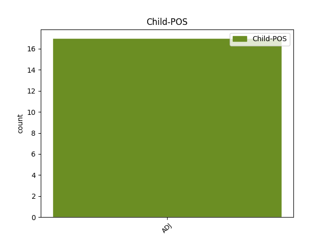

Distribution of features within this leaf

Agreement Rules sorted by frequency.
- When the dependent token is the conjunct(conj) of the head token, and the head token is ADJ and the dependent token is ADJ.
1 Я _ _ _ _ 0 _ _ _
2 не _ _ _ _ 0 _ _ _
3 дышу _ _ _ _ 0 _ _ _
4 , _ _ _ _ 0 _ _ _
5 а _ _ _ _ 0 _ _ _
6 пью _ _ _ _ 0 _ _ _
7 благоуханье _ _ _ _ 0 _ _ _
8 Моей _ _ _ _ 0 _ _ _
9 земли _ _ _ _ 0 _ _ _
10 равнинной равнинный ADJ _ Case=Ins|Degree=Pos|Gender=Fem|Number=Sing 0 _ _ _
11 и _ _ _ _ 0 _ _ _
12 лесной лесной ADJ _ Case=Gen|Degree=Pos|Gender=Fem|Number=Sing 10 conj _ _
13 . _ _ _ _ 0 _ _ _
1 Чечнягай чечняг ADJ _ Animacy=Anim|Case=Nom|Gender=Masc|Number=Sing 2 udep _ _
2 дуулал дуулал VERB _ Animacy=Anim|Case=Nom|Gender=Masc|Number=Sing 0 _ _ _
3 Чечен _ _ _ _ 0 _ _ _
4 хэлэн _ _ _ _ 0 _ _ _
5 Харцоно _ _ _ _ 0 _ _ _
6 цІе _ _ _ _ 0 _ _ _
7 тесна _ _ _ _ 0 _ _ _
8 хьо _ _ _ _ 0 _ _ _
9 ягарх _ _ _ _ 0 _ _ _
10 , _ _ _ _ 0 _ _ _
11 Нохчийчоь _ _ _ _ 0 _ _ _
12 , _ _ _ _ 0 _ _ _
13 ца _ _ _ _ 0 _ _ _
14 йоьжна _ _ _ _ 0 _ _ _
15 , _ _ _ _ 0 _ _ _
16 гІаьттина _ _ _ _ 0 _ _ _
17 яха _ _ _ _ 0 _ _ _
18 . _ _ _ _ 0 _ _ _
1 Гадаадын _ _ _ _ 0 _ _ _
2 эргэд _ _ _ _ 0 _ _ _
3 Америкын _ _ _ _ 0 _ _ _
4 харьяата _ _ _ _ 0 _ _ _
5 болоходо _ _ _ _ 0 _ _ _
6 баримталха _ _ _ _ 0 _ _ _
7 журамые _ ADJ _ Case=Nom|Number=Plur 8 subj _ _
8 тогтоодог тогтоо VERB _ Mood=Ind|Number=Plur|Person=1|Tense=Past|VerbForm=Fin 0 _ _ _
9 . _ _ _ _ 0 _ _ _
1 Жэжэ _ _ _ _ 0 _ _ _
2 булжамуур _ _ _ _ 0 _ _ _
3 Calandrella _ _ _ _ 0 _ _ _
4 brachydactyla _ _ _ _ 0 _ _ _
5 Жэжэ _ _ _ _ 0 _ _ _
6 булжамуур булжамуур NOUN _ Animacy=Anim|Case=Nom|Gender=Masc|Number=Sing 0 _ _ _
7 ( _ _ _ _ 0 _ _ _
8 лат лат ADJ _ Animacy=Inan|Case=Nom|Gender=Masc|Number=Sing 6 parataxis _ _
9 . _ _ _ _ 0 _ _ _
1 Үбшэнэй _ _ _ _ 0 _ _ _
2 дэбжэлтые _ _ _ _ 0 _ _ _
3 зогсохо _ _ _ _ 0 _ _ _
4 гү _ _ _ _ 0 _ _ _
5 , _ _ _ _ 0 _ _ _
6 али _ _ _ _ 0 _ _ _
7 урбуулха _ _ _ _ 0 _ _ _
8 эмнэлгэ _ _ _ _ 0 _ _ _
9 үгы _ _ _ _ 0 _ _ _
10 байхашье _ _ _ _ 0 _ _ _
11 һаа _ _ _ _ 0 _ _ _
12 , _ _ _ _ 0 _ _ _
13 зарим _ _ _ _ 0 _ _ _
14 шэнжэ _ _ _ _ 0 _ _ _
15 тэмдэгые тэмдэ ADJ _ Case=Nom|Number=Plur 0 _ _ _
16 ( _ _ _ _ 0 _ _ _
17 симптомые симптомый ADJ _ Case=Nom|Degree=Pos|Number=Plur 15 parataxis _ _
18 ) _ _ _ _ 0 _ _ _
19 саг _ _ _ _ 0 _ _ _
20 зуура _ _ _ _ 0 _ _ _
21 һайжаруулжа _ _ _ _ 0 _ _ _
22 магад _ _ _ _ 0 _ _ _
23 . _ _ _ _ 0 _ _ _
1 Үндэһэтэнэй _ _ _ _ 0 _ _ _
2 бүлэгүүд _ _ _ _ 0 _ _ _
3 Америкэ _ _ _ _ 0 _ _ _
4 маша _ _ _ _ 0 _ _ _
5 олон _ _ _ _ 0 _ _ _
6 янзын _ _ _ _ 0 _ _ _
7 үндэһэтэнтэй _ _ _ _ 0 _ _ _
8 орон _ _ _ _ 0 _ _ _
9 , _ _ _ _ 0 _ _ _
10 олон _ _ _ _ 0 _ _ _
11 үндэһэтэниинь _ _ _ _ 0 _ _ _
12 өөрынгөө _ _ _ _ 0 _ _ _
13 хэлые хэлые ADJ _ Case=Nom|Number=Plur 0 _ _ _
14 , _ _ _ _ 0 _ _ _
15 ёһо _ _ _ _ 0 _ _ _
16 заншалые занша ADJ _ Case=Nom|Number=Plur 13 conj:emb _ _
17 хамгаалһан _ _ _ _ 0 _ _ _
18 . _ _ _ _ 0 _ _ _
1 Цветущая _ _ _ _ 0 _ _ _
2 от _ _ _ _ 0 _ _ _
3 края _ _ _ _ 0 _ _ _
4 и _ _ _ _ 0 _ _ _
5 до _ _ _ _ 0 _ _ _
6 края _ _ _ _ 0 _ _ _
7 , _ _ _ _ 0 _ _ _
8 Будь быть AUX _ Aspect=Imp|Mood=Imp|Number=Sing|Person=2|VerbForm=Fin|Voice=Act 0 _ _ _
9 счастлива счастливый ADJ _ Degree=Pos|Gender=Fem|Number=Sing|Variant=Short 8 comp:pred _ _
10 , _ _ _ _ 0 _ _ _
11 родная _ _ _ _ 0 _ _ _
12 сторона _ _ _ _ 0 _ _ _
13 . _ _ _ _ 0 _ _ _
1 Эндэһээ _ _ _ _ 0 _ _ _
2 эхилэн _ _ _ _ 0 _ _ _
3 , _ _ _ _ 0 _ _ _
4 норвегиин _ _ _ _ 0 _ _ _
5 хэлэ _ _ _ _ 0 _ _ _
6 барилгын _ _ _ _ 0 _ _ _
7 хүгжэлтэ _ _ _ _ 0 _ _ _
8 хоер _ _ _ _ 0 _ _ _
9 замаар _ _ _ _ 0 _ _ _
10 алхалһан _ _ _ _ 0 _ _ _
11 түүхэтэй _ _ _ _ 0 _ _ _
12 . _ _ _ _ 0 _ _ _
13 1840 _ _ _ _ 0 _ _ _
14 онуудаар _ _ _ _ 0 _ _ _
15 даан _ _ _ _ 0 _ _ _
16 хэлэтэй _ _ _ _ 0 _ _ _
17 норвегиин _ _ _ _ 0 _ _ _
18 уран _ _ _ _ 0 _ _ _
19 зохеолшод _ _ _ _ 0 _ _ _
20 , _ _ _ _ 0 _ _ _
21 яруу _ _ _ _ 0 _ _ _
22 найрагшад найраг NOUN _ Case=Nom|Number=Plur 0 _ _ _
23 , _ _ _ _ 0 _ _ _
24 юрын _ _ _ _ 0 _ _ _
25 зоной _ _ _ _ 0 _ _ _
26 байдалые байда ADJ _ Case=Nom|Number=Plur 22 conj _ _
27 , _ _ _ _ 0 _ _ _
28 оршон _ _ _ _ 0 _ _ _
29 тойрон _ _ _ _ 0 _ _ _
30 байгаалиие _ _ _ _ 0 _ _ _
31 зураглахадаа _ _ _ _ 0 _ _ _
32 , _ _ _ _ 0 _ _ _
33 хара _ _ _ _ 0 _ _ _
34 ярианай _ _ _ _ 0 _ _ _
35 зарим _ _ _ _ 0 _ _ _
36 үгэнүүдые _ _ _ _ 0 _ _ _
37 хэрэглэдэг _ _ _ _ 0 _ _ _
38 болобо _ _ _ _ 0 _ _ _
39 . _ _ _ _ 0 _ _ _
Disagree Examples:
1 Засагай _ _ _ _ 0 _ _ _
2 түблэрэлэй _ _ _ _ 0 _ _ _
3 гүрэнэй _ _ _ _ 0 _ _ _
4 түрын _ _ _ _ 0 _ _ _
5 бодолгые _ _ _ _ 0 _ _ _
6 дүүргэбэ _ _ _ _ 0 _ _ _
7 ; _ _ _ _ 0 _ _ _
8 католик _ _ _ _ 0 _ _ _
9 сүмые сүмые ADJ _ Case=Nom|Number=Plur 10 subj _ _
10 дэмжэбэ дэмжэ VERB _ Mood=Ind|Number=Sing|Person=3|Tense=Aor|VerbForm=Fin 0 _ _ _
11 ; _ _ _ _ 0 _ _ _
12 шүүхын _ _ _ _ 0 _ _ _
13 , _ _ _ _ 0 _ _ _
14 сэрэгэй _ _ _ _ 0 _ _ _
15 гэхэ _ _ _ _ 0 _ _ _
16 мэтэ _ _ _ _ 0 _ _ _
17 шэнэшлэл _ _ _ _ 0 _ _ _
18 хэбэ _ _ _ _ 0 _ _ _
19 . _ _ _ _ 0 _ _ _